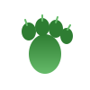

BearAware Mobile App
Centrul coordonării: aplicația care conectează sistemele fixe și mobile cu utilizatorii, oferind alerte în timp real și educație pentru coexistență sigură.
Rolul aplicației în ecosistemul BearAware
Aplicația BearAware reprezintă centrul de legătură între cele două sisteme (fix și mobil), transformând datele de detecție în informații utile și acționabile pentru drumeți, rangeri, localnici și autorități.
Când un urs este detectat de sistemul fix sau de dronă, aplicația primește imediat coordonatele GPS și marchează zona pe hartă, asigurând transparență și siguranță în zonele frecventate de urși.
Hartă interactivă în timp real
- Afișează prezența urșilor pe Google Maps cu zone roșii pentru detecții recente
- Coordonate GPS exacte transmise de sistemele fixe și dronă
- Actualizare automată la fiecare detecție nouă
- Vizibilitate pentru toți utilizatorii din zonă
Asistent AI educațional
- Chatbot specializat în comportamentul urșilor
- Răspunde la întrebări precum: "Ce fac dacă întâlnesc un urs?"
- Informații biologice și sfaturi de siguranță
- Enciclopedie digitală despre urși și coexistență

Notificări în timp real
- Alerte push instant la detecția unui urs în apropiere
- Sincronizare cu sistemul RoAlert
- Informații despre distanță și direcție
- Recomandări de siguranță personalizate
Pentru toți utilizatorii
- Drumeți - verifică traseele înainte de plecare
- Localnici - protecție pentru gospodării
- Rangeri - monitorizare și intervenție
- Autorități - date pentru management
Integrare completă cu sistemele de detecție
Aplicația comunică bidirecțional cu:
Sistem Fix
- Primește alerte de la camerele AI (YOLOv8)
- Marchează zonele unde s-au activat ultrasunetele/infrasunetele
- Loghează fiecare apariție cu timestamp și GPS
Sistem Mobil (Dronă)
- Primește coordonatele detecțiilor aeriene
- Afișează traseele scanate de dronă
- Confirmă siguranța traseelor înainte de drumeție
Componenta educațională
Dimensiunea educativă derivă din prezența chatbot-ului AI, care oferă sfaturi, informații și curiozități despre urși, ajutând comunitățile umane să trăiască în armonie cu natura.
Este prima soluție complet integrată de acest fel: un sistem inteligent, ecologic și empatic, care apără oamenii, redă demnitatea urșilor și transformă teama în cunoaștere.
Tehnologii utilizate
- Google Maps API - hartă interactivă
- Real-time Database - sincronizare instant
- Push Notifications - alerte în timp real
- AI Chatbot (LLM) - asistent educațional
- GPS Integration - localizare precisă
- Cross-platform - Android & iOS
Dezvoltare și lansare
Status actual: Prototip funcțional cu funcții de bază pentru hartă și alerte
Urmărește progresul dezvoltării: